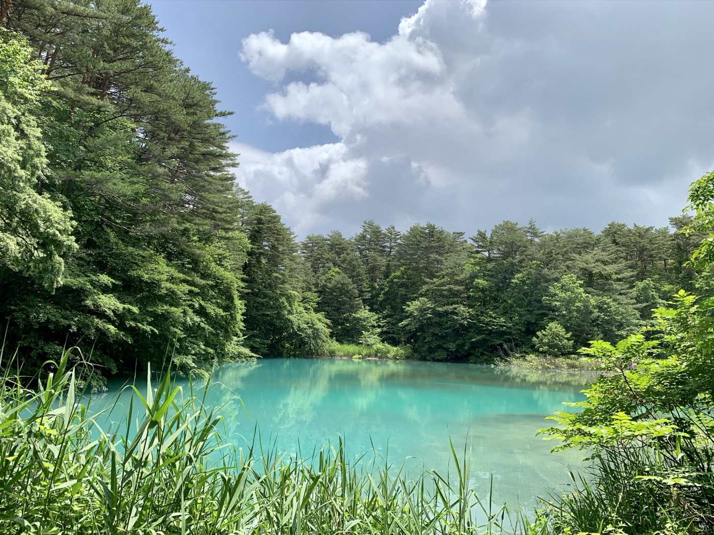
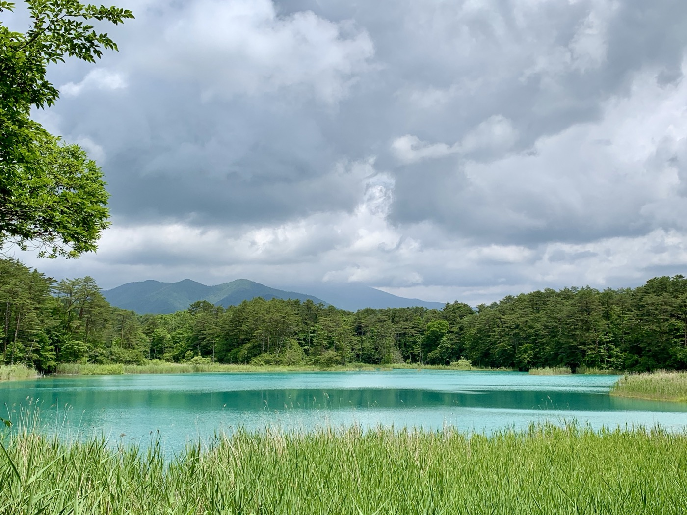
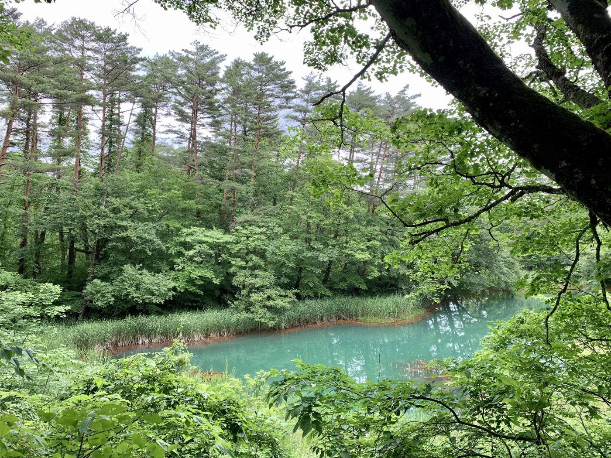

福島県北塩原村、裏磐梯に広がる五色沼は、複数の沼が点在する湖沼群の総称だ。それぞれの沼が異なる色を持ち、エメラルドグリーン、コバルトブルー、ミルキーブルーなど、見る角度や天気によって表情を変える。

なぜ色が違うのか
各沼の色の違いは、含まれる火山性の硫黄成分や鉄分、アルミニウムの量の差による。1888年の磐梯山噴火で地形が変化し、今の湖沼群が形成された。湖底の成分が光を散乱させるため、青や緑の神秘的な色が生まれる。


自然探勝路を歩く
毘沙門沼〜柳沼間の自然探勝路は約3.6kmで、1時間半ほどで歩ける。途中の沼を眺めながらのんびり歩くと、沼ごとに色が違うことが実感できる。秋の紅葉シーズンは特に美しい。
火山が作った景色は、荒涼とした磐梯吾妻スカイラインとも、穏やかな五色沼とも繋がっている。同じ福島の自然でも、こんなに表情が違う。
今回訪れた場所
1
五色沼自然探勝路（毘沙門沼〜柳沼）
福島県耶麻郡北塩原村大字桧原字剣ヶ峯1093 / アクセス：磐越自動車道猪苗代磐梯高原ICから車で約15分。裏磐梯高原バス停すぐ